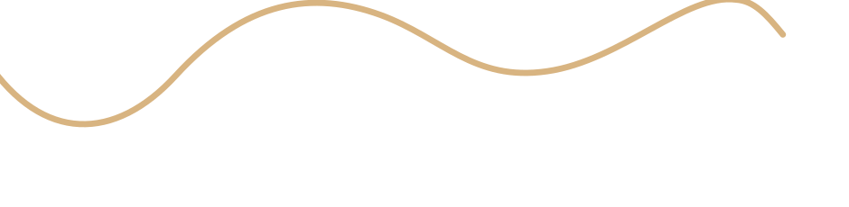

ART DIRECTION 02 · STUDIO VETTORIALEDeborah Anastasio
Deborah Anastasio
DA / DAB
Tre composizioni disegnate sugli stessi tracciati Playfair Display. La curva champagne applicata sopra la A è sempre il medesimo percorso SVG, e resta un livello separato dalle lettere.
01 / Firma dell'artista


02 / Monogramma DA

03 / Deborah Anastasio Band


Master del baffo

Stessa geometria nelle tre applicazioni. Se cambiamo il baffo, aggiorniamo il master prima di rifinire le composizioni.